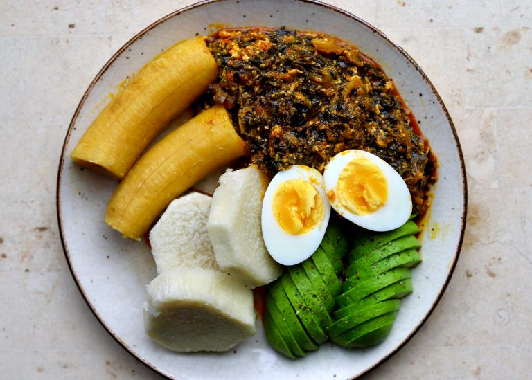

Ampesi and Kontommire Stew

Description
Ingredients
- Palm oil
- Onion
- Habanero pepper
- Fresh tomatoes
- Kontommire leaves
- Eggs
- Salted fish and salmon
- Tomatoe paste
- Yam and plantain
- Salt and seasoning to taste
- Pear
- Garlic and ginger
Steps
- Wash the kontomire thoroughly and place it in a pot with a small amount of water.
Boil the kontomire for 5-7 minutes until it softens.
- After boiling, remove the kontomire from the pot and grind or mash it into a smooth puree. Set aside.
- Wash the fresh tomatoes,ginger,garlic,onion and pepper.
Blend the tomatoes, pepper, garlic, ginger, and a portion of the onion into a smooth paste. Set aside.
- In a separate pot, heat the palm oil over medium heat.
Add the salted fish (koobi or smoked fish) and chunks of salmon to the hot oil and fry for 2-3 minutes until fragrant.
- Add the chopped onion and stir-fry until soft and translucent.
Add the blended mixture of tomatoes, pepper, garlic, ginger, and onion to the pot. Stir and cook the mixture for 10-12 minutes until it thickens.
- Add the tomato paste and continue stirring for another 5-7 minutes to enhance the flavor.
Add the semi-mashed kontomire puree to the stew, stirring to combine the ingredients well.
- In a separate bowl, whisk the eggs until well-mixed, then pour the eggs into the stew. Let the eggs cook undisturbed for a few minutes before stirring gently to create soft lumps of eggs in the stew.
- Season with salt and seasoning cubes (if using). Stir and allow the stew to simmer for another 5 minutes. Set aside.
- In another pot, add water and a pinch of salt. Bring it to a boil.
Add the peeled and cut yam and plantain pieces to the boiling water
- Wash the eggs and carefully place them in the same pot with the yam to boil together.
Boil the yam and eggs for about 15-20 minutes, or until the yam is tender and the eggs are fully cooked.Once done, remove the eggs, peel off the shells, and slice them for garnish.
- Wash and peel the ripe pear (avocado).
Slice it into thin, even slices to serve alongside the yam and stew.
- Serve the boiled yam alongside the kontomire stew.
Garnish the plate with the sliced boiled eggs and pear (avocado) slices for a complete and delicious meal.